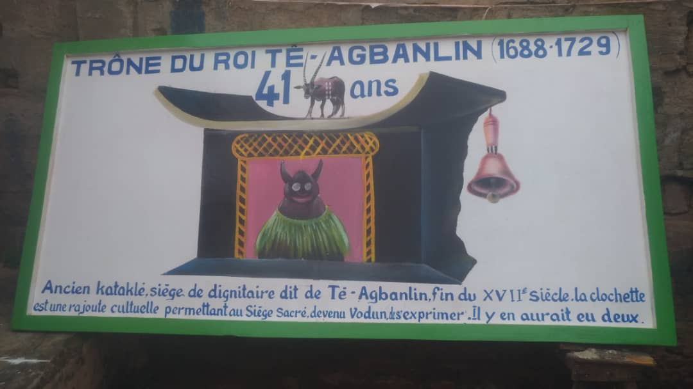

Le Royaume de Porto-Novo
Tê-Agbanlin traversant la rive de l’autre côté de Houinta, se reposa sur un espace appelé Sokomey où il s’installa. Il fut accueilli par le Chef d’Okoro (Akron). Il obtint non loin de Sokomey, un vaste domaine par effilement de la peau d’une antilope à partir de fines lanières qu’il mit bout à bout. Tê-Agbanlin proposa à ses hôtes d’utiliser la peau d’une de ses proies pour s’octroyer de l’espace. Une fois disposant de coudées franches, Tè-Agbanlin va construire la grande maison de son choix à proximité d’Akron. Les alentours de cette splendide maison étaient désignés par « Hogbonu » qui signifie « l’entrée de la grande maison» dans la langue gun (gungbé) et l’intérieur de cette résidence était désigné par « Hogbomè » qui signifie « l’intérieur de la grande maison ».
Après la construction de sa résidence et ses alentours organisés à l’image d’Aja-Tado, Tè-Agbanlin s’exclama : en ces termes et en apostrophant les Aja comme lui qui vivaient dans l’actuelle localité de Jasin : « Ajashèdiyé, Aja miton nisin do don » qui signifie « voilà mon vrai Aja retrouvé, que votre Aja se développe là-bas » dans la langue aïzo d’Allada (aïzogbé). Tê Agbanlin, descendant de Dassa (petit-fils d’Aholouho), fonda une entité politique à partir de la « case grande »> qu’il avait construite sur le terrain que le chef d’Aklon lui avait donné et qui porte desormais le nom de Hogbonou (en fongbé et goungbé), Adjatché (en yorouba) et Porto-Novo (en langue portugaise). Avec le temps, ce nom employé pour désigner la « case grande » s’applique également à la nouvelle formation sociopolitique et à tout le royaume. Tê-Agbanlin, descendant de Dassa, fonda Hogbônou, qu’il s’efforça d’organiser à l’image de son pays d’origine, pour perpétuer les traditions de ses ancêtres. Il fit venir à Porto-Novo un descendant de Dassou et le nomma roi dans un village qu’il baptisa Davié. Ce roi de Davié devait jouer le même rôle que le Daviéholou d’Adja-Tadô. Toutes les lignées royales d’Adja-Tadô furent par la suite regroupées à Porto-Novo. Tè Agbanlin les installa dans différentes portions de la ville. Aux descendants de Hinto et de Houandjan, il attribua le grand marché et Agbo-Komè. Ceux de Tè Rami reçurent le quartier Adômè. A cette dernière lignée fut confiée la clef du temple d’Aholouhô. C’est elle qui devait fournir désormais les deux dignitaires principaux du culte de l’ancêtre ; le grand prêtre Aholouho Klounon et le prieur dènon. Cependant, ces dignitaires n’étaient choisis que parmi les fils des princesses de sang. A partir de cette époque, la présence au temple d’un membre de celle lignée devint obligatoire lors du sacre de tout roi. Toute disposition contraire est frappée d’invalidité. Les descendants de Houan s’installèrent à Lôkossa. Ceux de Lizoumè et Zin, établis à Ouézoumé et Zinkomè fournirent plus tard les Ligans.
Les descendants de Dossou et de Tè Houanton qui restèrent à Zèbou donnèrent les Mèwous et, plus tard, les Ahôgans, sous le règne de Tôfa. Houan, Lïzoumè, Zin, Dossou et Komè, tous divinisés et adorés, de nos jours, reçurent chacun un temple spécial, bâti à l’ombre d’un iroko. A cette époque du commandement de Tè Agbanlin, l’histoire de l’organisation politique de la royauté naissante était gestante. Des postes de dignitaires existaient déjà. Tel était le cas des postes Saï confié à Djègbè et à ses descendants, d’Adjagan (chef de protocole) et de Sogan-Flin (chef de l’écurie), Migan confié aux descendants Aho. Gomégan le grand maitre du protocole et avec le temps, le titre allait devenir celui de Gogan, c’est-à-dire parrain officiel du roi. En ce qui concerne la dignité du Migan. De toute façon, après l’installation de Daviéholou à Hogbonou, Tè Agbanlin poursuivit sa politique de transfert. Tê-Agbanlin consolida les bases de son royaume. Sous son règne furent fondés les quartiers suivants : Adankomey, Agbokômey, Adomey, Aglansa, Agbokou, Attingbassa, Avassa, Adjina, Ayizandjokomey, Bagro, Davié, Hondji, Hlouenda, Hassoukômey, Houèzounmè, Kandévié ; Lokossa, Sokômè, Tôgoh, Vèkpa, Zinkômey, Zèbou-Aga et Xlogou.

